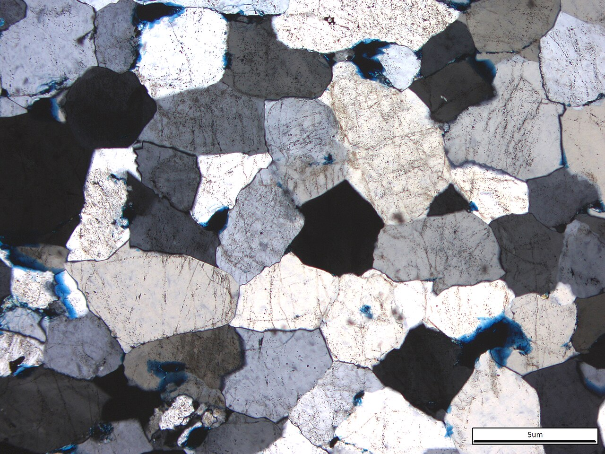
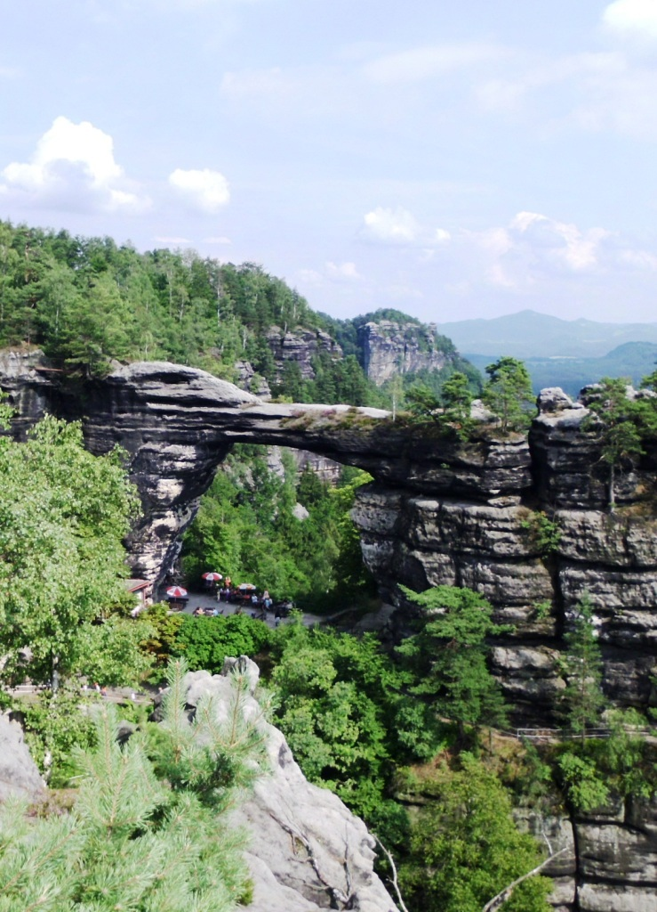
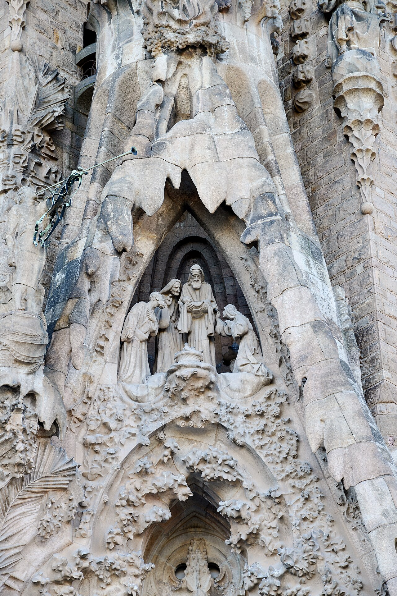

Pedra de Montjuïc
Arenito silicoso (silicificado) — Gres silício / lit arenito silício
- Classificação
- Gres silício / lit arenito silício
- Idade
- Miocénico médio–superior · ~15–11 Ma
- Ambiente de origem
- Deltaíco (sistema deltaico do Llobregat), coluvião da rocha de Collserola
- Pedreira / local
- Montjuïc, Barcelona — Catalunya, Espanha
- Coordenadas
- 41.363° N, 2.165° E
- Distância ao templo
- 0–6 km do templo
- Densidade
- 2,64 g/cm³
- Resistência à compressão
- 978 kg/cm² · 96 MPa




Arenita de grão 0,06–2 mm, de marcada heterometria, passando a microconglomerado; grans unidos por compactação e por cimento silício microcristalino, por vezes argiloso-ferruginoso.
Quartz (frequentemente >50%), feldspato potássico, plagioclase, fragmentos de rocha (metamórfica e granítica), moscovita, turmalina; acessórios: zircão, apatite.
Deposição detrítica num delta miocénico, seguida de silicificação diagénica quase total. É esta silicificação que transforma um arenito friável num grés compacto e muito resistente — a distinção local entre blanquet (duro) e rebuig (macio) é, em essence, uma distinção de grau de silicificação.
Façana do Nascimento, Façana da Paixão, as quatro torres (~100 m), colunas hexagonais de Ø 1,05 m, galerias do coro, escadas de acesso.